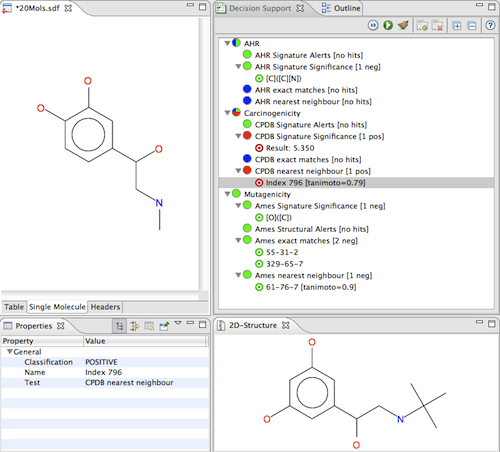

Decision Support Users Guide
The Decision Support Perspective
A Decision Support Perspective is available to arrange the Bioclipse workbench
for predicting chemical liabilities. From the main menu, choose Window > Open Perspective
and then select the Decision Support option.
Predicting for individual molecules: The Decision Support View
Open the view Decision Support, available from the menu
Window > Show view > other... and select Decision Support.
Now, open a chemical structure with 2D coordinates in the chemical editor by
double-clicking on e.g. a mol/cml file in the Bioclipse Navigator.
Click the Run button in the local toolbar of the Decision Support view.
If there are matches, you can select them in the Decision Support view and get
more detailed decision support, for example a highlighted substructure or the
full structure of an identical hit in an external database.
Results may look like the figures below.
You can make changes in the chemical editor and re-run the models to get an updated result.
Note the option in the Decision Support View local toolbar to auto-rerun on a chemical edit.
This way it is possible to, in real time, make changes and see how
these changes are predicted, allowing for trying different hypothesis.

Above: Models resulting in substructure matches can be highlighted in the original
chemical structure.

Above: Models resulting in external matches can be visualized in the 2D-Structure View.
Predicting for multiple molecules: Using the Molecules Table
Open an SD-file in the Bioclipse Molecules Table consisting of the molecules you'd like to evaluate.
Now, right-click in the Molecules Table and choose an option from the
Decision Support menu. This will start a calculation in the background,
note the progress in the status bar or in the Progress View.
Results may look like the figure below.

There is also the possibility to right-click on an SD-file in the Bioclipse Navigator
and calculate Decision Support properties, without opening it in the Molecules Table.
This is faster and the preferred option for larger collections of compounds.